|
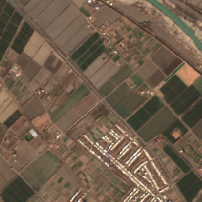 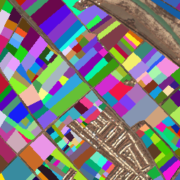 |
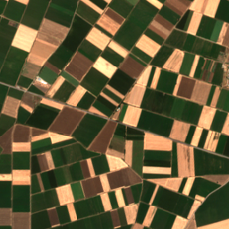 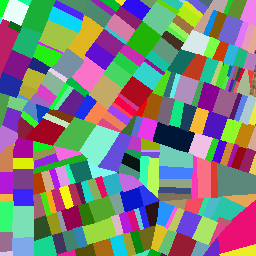 |
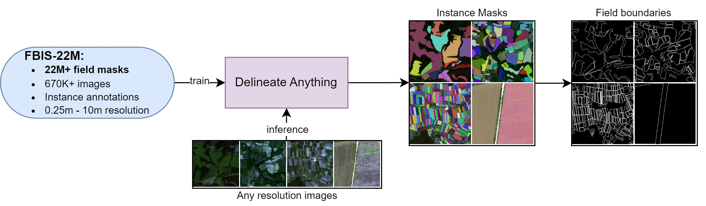
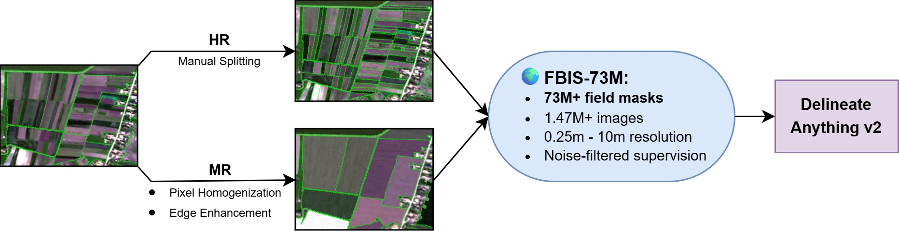
Accurate agricultural field boundary delineation at large scale is a foundational task for food security, supply chain transparency, and carbon accounting. While vision foundation models like SAM show remarkable zero-shot capabilities, they frequently fail in geospatial domains due to topological complexity, cropland texturing patterns, and a lack of physical scale awareness. In this work, we introduce Delineate Anything v2, a globally scalable foundation model designed specifically for wide-area field boundary mapping. We construct FBIS-73M, a 73-million-instance multi-resolution dataset spanning 61 countries. To address the pervasive issue of multi-field administrative parcel merging, we introduce a resolution-specific data curation pipeline that leverages topological image-space adaptation to homogenize merged parcels and strengthen weak physical boundaries. Furthermore, we establish a novel, manually curated evaluation benchmark covering 100 countries to assess independent zero-shot generalization. Our results show that Delineate Anything v2 surpasses the current state-of-the-art, including the Delineate Anything framework, by 0.284 mAP@0.5 (+103.3% relative gain), while maintaining execution speeds suitable for rapid national- and global-scale deployment, as demonstrated by nationwide mapping of Ukraine (603,000 km²) in 5.4 hours on a consumer-grade workstation.
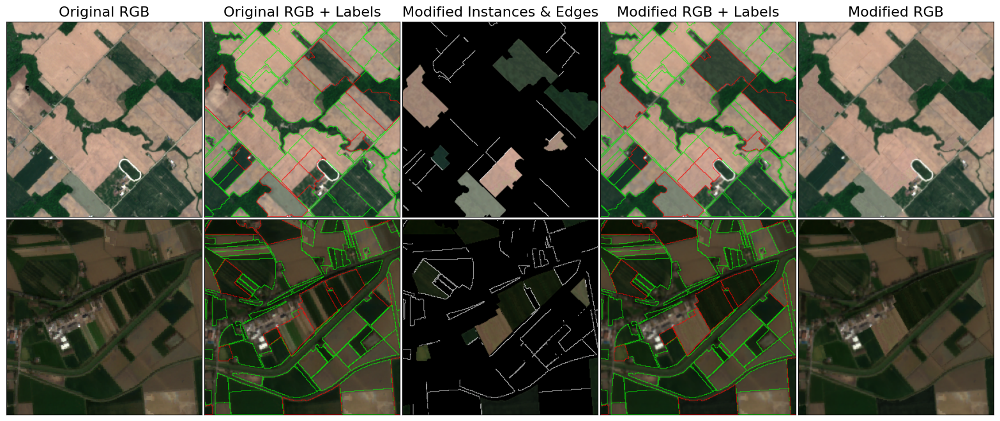
FBIS-73M extends FBIS-22M into a 73-million-instance, multi-resolution (0.25m–10m) dataset spanning 61 countries with diverse imagery sources, built through a resolution-specific curation pipeline that resolves the parcel-versus-field mismatch present in raw administrative boundary sources.
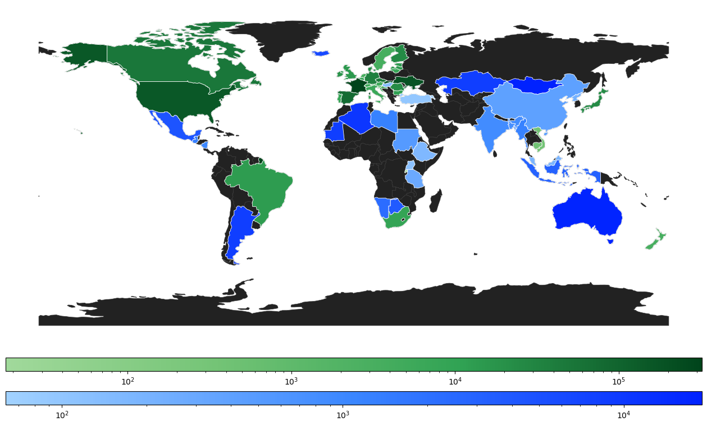
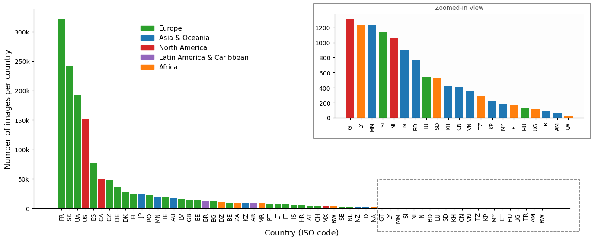
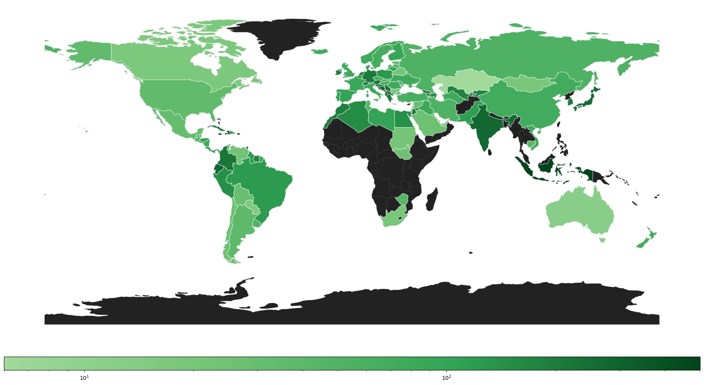
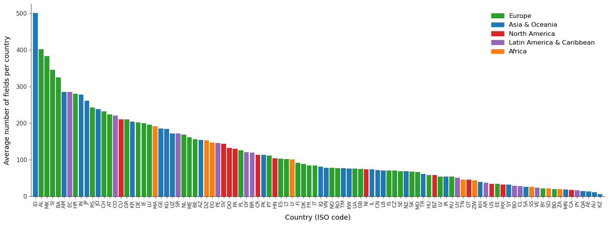
| Dataset | Resolution | # Images | # Instances |
|---|---|---|---|
| General Computer Vision Datasets | |||
| LAION-5B (Schuhmann et al., 2022) | - | 5.85B | - |
| COCO (Lin et al., 2014) | - | 330K | 1.5M |
| Open Images (Kuznetsova et al., 2020) | - | 998K | 2.8M |
| SA-1B (Kirillov et al., 2023) | - | 11M | 1.1B |
| Field Boundary Delineation Datasets | |||
| Farm Parcel (Aung et al., 2020) | 10m | 2K | - |
| India10K (Wang et al., 2022) | - | - | 10K |
| PASTIS (Garnot and Landrieu, 2021) | 10m | 2K | 124K |
| PASTIS-R (Garnot et al., 2022) | 10m | 2K | 124K |
| PASTIS-HD | 1m & 10m | 2K | 124K |
| AI4SmallFarms (Persello et al., 2023) | 10m | 62 | 439K |
| AI4Boundaries (d'Andrimont et al., 2023) | 1m & 10m | 55K | 2.5M |
| Fields of The World (Kerner et al., 2024) | 10m | 70K | 1.63M |
| FBIS-22M (Lavreniuk et al., 2025) | 0.25m-10m | 673K | 22.9M |
| FBIS-73M (Lavreniuk et al., 2026) | 0.25m-10m | 1.47M | 73M |
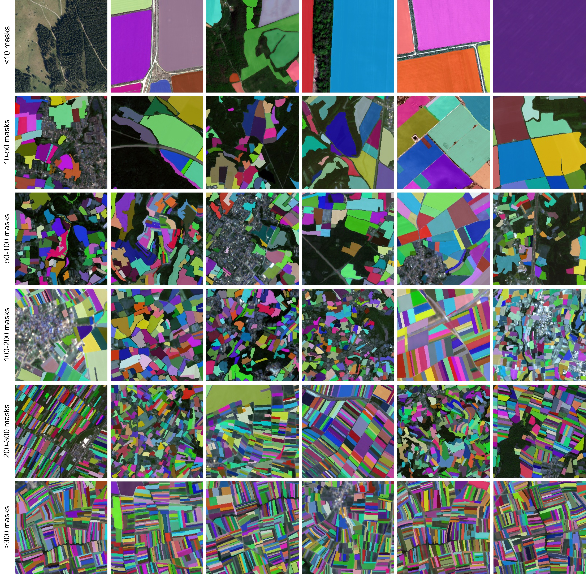
| Method | mAP@0.5 | mAP@0.5:0.95 | Precision | Recall | Latency (ms) | Size |
|---|---|---|---|---|---|---|
| Delineate Anything | 0.275 | 0.103 | 0.345 | 0.454 | 25.0 | 125 MB |
| Delineate Anything v2 | 0.559 | 0.278 | 0.639 | 0.525 | 25.0 | 125 MB |
| Method | Europe | Africa | Asia & Oceania | Latin America | North America |
|---|---|---|---|---|---|
| Delineate Anything | 0.332 | 0.251 | 0.161 | 0.314 | 0.317 |
| Delineate Anything v2 | 0.612 | 0.584 | 0.440 | 0.563 | 0.618 |
| Training Configuration | mAP@0.5 | Gains (Δ) |
|---|---|---|
| FBIS-22M (Baseline) | 0.275 | – |
| FBIS-73M (Raw labels, No Curation) | 0.361 | +0.086 |
| FBIS-73M (+ HR Manual Split) | 0.409 | +0.048 |
| Delineate Anything v2 (Full Curation Pipeline) | 0.559 | +0.150 |
Note: For a quantitative and qualitative comparison of Delineate Anything against generic vision foundation models (SAM, SAM2) and MultiTLF, see Table 2 and Figure 4 in the Delineate Anything paper.
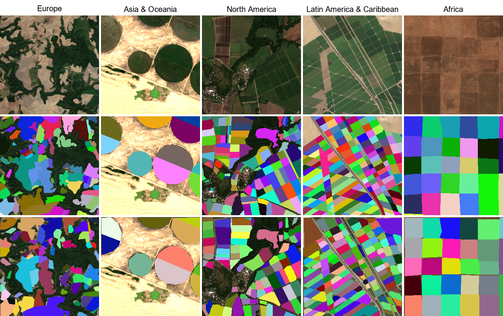
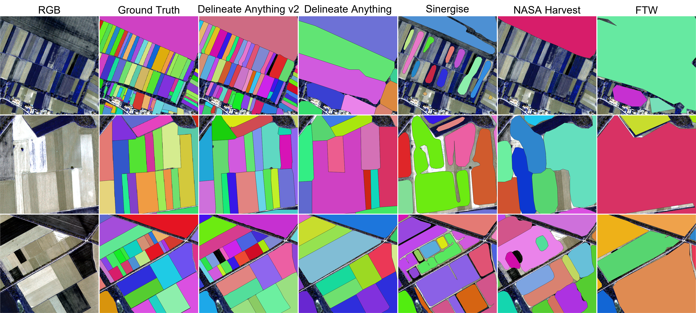
@inproceedings{lavreniuk2026delanyv2,
title={Delineate Anything v2: A Global Foundation Model for Field Delineation},
author={Mykola Lavreniuk and Nataliia Kussul and Andrii Shelestov and Yevhenii Salii and Volodymyr Kuzin and Charlotte Julia Li-Xing Wang and Zoltan Szantoi},
year={2026},
booktitle={European Conference on Computer Vision Workshops (ECCVW)},
}
@inproceedings{lavreniuk2025delineateanything,
title={Delineate Anything: Resolution-Agnostic Field Boundary Delineation on Satellite Imagery},
author={Mykola Lavreniuk and Nataliia Kussul and Andrii Shelestov and Bohdan Yailymov and Yevhenii Salii and Volodymyr Kuzin and Zoltan Szantoi},
year={2025},
booktitle={European Conference on Artificial Intelligence},
}
@article{lavreniuk2025delineateanythingflow,
title={Delineate Anything Flow: Fast, Country-Level Field Boundary Detection from Any Source},
author={Mykola Lavreniuk and Nataliia Kussul and Andrii Shelestov and Yevhenii Salii and Volodymyr Kuzin and Sergii Skakun and Zoltan Szantoi},
year={2025},
journal={https://arxiv.org/abs/2511.13417},
}